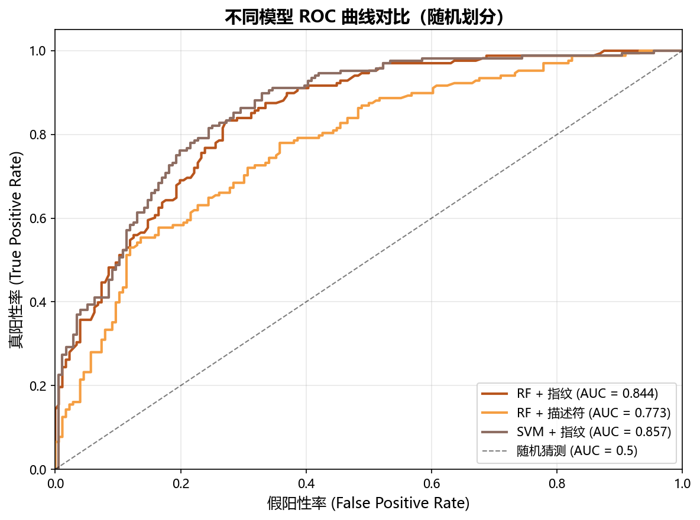
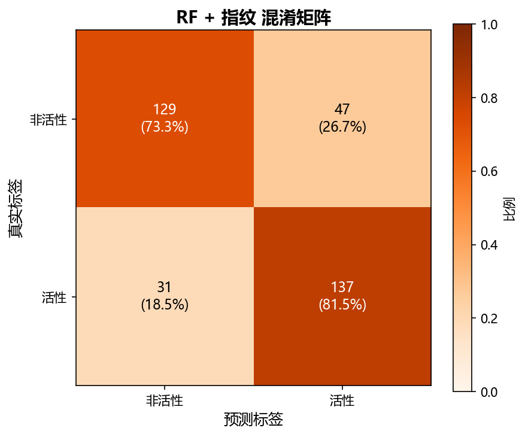
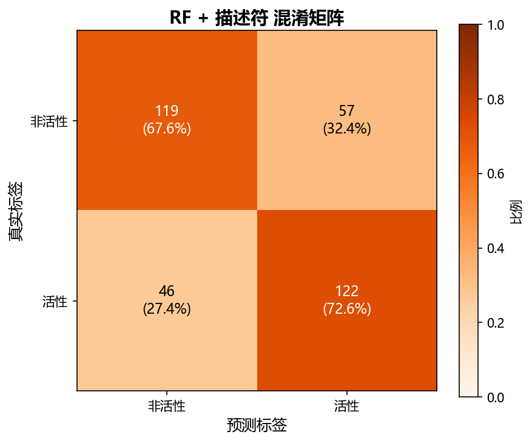
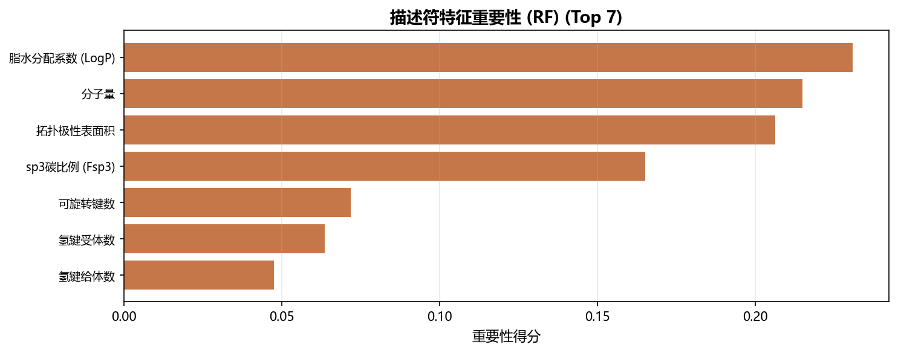
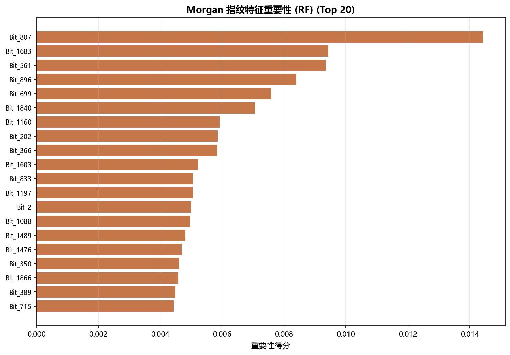

第二个 QSAR 练手项目，全流程独立仿写完成。与 EGFR 项目最大的不同：COX-2 抑制剂化学型多样（昔布类 / 洛芬类 / 水杨酸类），模型整体更难预测，骨架划分泛化能力显著下降。错误分析揭示模型学到的是"昔布脸"这一化学型特征，而非真正的结合机制。
| 步骤 | 处理 | 数量变化 | 说明 |
|---|---|---|---|
| 01 拉取 | ChEMBL API 分页拉取（CHEMBL230） | 5,000 条 | IC50 3175 · Inhibition 1625 |
| 02 清洗 | 去空 pChEMBL（Inhibition 多无定量值） | → 2,662 | 流失 47%，高于 EGFR 的 37% |
| SMILES 标准化 + 去重取均值 | → 1,721 | 阈值 pChEMBL ≥ 6.5 | |
| 03 特征 | 异常值过滤（MW > 1000） | → 1,720 | 仅剔除 1 个异常分子 |
| 04 建模 | 3 特征 × 2 划分 × 3 模型 = 18 组合 | 1376 训 / 344 测 | 骨架 413 种 |
| 05 分析 | 12 张图表 + 错误样本分析 | FP 47 / FN 31 | RF + 指纹（随机划分） |
注意 COX-2 在"去空 pChEMBL"一步流失比 EGFR 多 10 个百分点，原因正是数据中 Inhibition 类（单浓度抑制率，无 IC50）占比高达 32.5%（EGFR 仅 10.5%）——实验测定方式的差异直接决定了可建模数据量。
| 模型 | 特征 | Accuracy | F1 | AUC | 过拟合 |
|---|---|---|---|---|---|
| XGB | 描述符+指纹 | 0.788 | 0.792 | 0.851 | 0.171 |
| RF | 描述符+指纹 | 0.785 | 0.789 | 0.859 | 0.205 |
| SVM | 指纹 | 0.782 | 0.785 | 0.857 | 0.106 |
| RF | 指纹 | 0.773 | 0.778 | 0.844 | 0.217 |
| XGB | 指纹 | 0.747 | 0.751 | 0.840 | 0.174 |
| 模型 | 特征 | Accuracy | F1 | AUC | 过拟合 |
|---|---|---|---|---|---|
| RF | 描述符(7维) | 0.692 | 0.760 | 0.720 | 0.275 |
| XGB | 描述符(7维) | 0.669 | 0.744 | 0.717 | 0.280 |
| SVM | 描述符(7维) | 0.645 | 0.742 | 0.684 | -0.024 |
| SVM | 描述符+指纹 | 0.640 | 0.732 | 0.684 | -0.016 |
| RF | 描述符+指纹 | 0.686 | 0.730 | 0.746 | 0.306 |



| 描述符 | EGFR (n=2030) | COX-2 (n=1720) | 效应量 |r| | p 值 |
|---|---|---|---|---|
| MW | 411.23 ± 103.4 | 379.02 ± 59.9 | 0.194 | <0.001 *** |
| LogP | 4.11 ± 1.39 | 4.03 ± 1.13 | 0.035 | 0.064 ns |
| HBA | 5.72 ± 1.62 | 3.91 ± 1.35 | 0.619 | <0.001 *** |
| HBD | 2.07 ± 1.15 | 0.74 ± 0.87 | 0.682 | <0.001 *** |
| TPSA | 84.90 ± 28.1 | 67.47 ± 23.2 | 0.382 | <0.001 *** |
| RotBonds | 5.71 ± 2.90 | 4.08 ± 1.79 | 0.342 | <0.001 *** |
| Fsp3 | 0.18 ± 0.12 | 0.18 ± 0.14 | 0.040 | 0.032 * |
解读：HBD 差异最大（效应量 0.682）——EGFR 抑制剂需要 hinge 区氢键给体（喹唑啉 NH），COX-2 抑制剂主要靠疏水作用，平均不到 1 个给体。LogP 是唯一无显著差异的指标：两类靶点共享 LogP ≈ 4 的"类药甜区"。
| 描述符 | EGFR 趋势 | COX-2 趋势 | 一致？ | 含义 |
|---|---|---|---|---|
| MW | ↑ 425 / 396 | ↑ 390 / 369 | ✓ | 共性：活性分子更大 |
| LogP | ↑ 4.25 / 3.95 | ↑ 4.29 / 3.79 | ✓ | 共性：活性分子更疏水（COX-2 分离更明显） |
| HBA | ↑ 5.96 / 5.47 | ↓ 3.72 / 4.10 | ✗ 相反 | EGFR 需受体结合 hinge；COX-2 疏水口袋惩罚极性 |
| HBD | ↓ 1.94 / 2.22 | ↓ 0.62 / 0.85 | ✓ | 共性：给体少 = 透膜/去溶剂化更有利 |
| TPSA | ↓ 81 / 89 | ↓ 65 / 70 | ✓ | 共性：活性分子极性更低 |
| RotBonds | ↑ 6.06 / 5.34 | ↓ 4.01 / 4.15 | ✗ 相反 | 激酶长口袋需柔性；COX-2 紧凑口袋重预组织 |
| Fsp3 | — 0.18 / 0.17 | — 0.17 / 0.20 | ✗ | 两靶点内部均无区分力 |
| 指标 | EGFR | COX-2 | 差距 |
|---|---|---|---|
| 随机划分最佳 AUC | 0.923 (SVM+指纹) | 0.857 (SVM+指纹) | −0.066 |
| 骨架划分 AUC（同模型） | 0.838 | 0.657 | −0.181 |
| RF+指纹 召回率 | 0.910 | 0.815 | −0.095 |
| 骨架划分过拟合（RF+指纹） | 0.159 | 0.367 | +0.208 |


| 局限 | 改进方向 |
|---|---|
| 骨架划分 AUC 仅 0.65–0.72，新骨架泛化弱 | 增加数据量；按化学型分层采样，保证各 chemotype 均衡入训 |
| 2D 指纹无法表达砜基的空间取向 | 引入 3D 描述符 / 构象依赖指纹（药效团模型） |
| 模型偏向"昔布脸"，漏判酸性 NSAIDs | 按化学型分别建模（local models）或加入 chemotype 感知特征 |
| 单一阈值 6.5、单一随机种子 | 阈值敏感性分析；多种子重复实验报告均值±标准差 |
| 未做 COX-2/COX-1 选择性建模 | 真正的昔布类核心是选择性，可构建双靶点选择性分类器 |
| English | 中文 / 说明 |
|---|---|
| Cyclooxygenase (COX-1/2) | 环氧合酶；COX-2 为诱导型，炎症时上调 |
| Prostaglandin | 前列腺素；COX 的下游产物，介导炎症疼痛 |
| NSAID | 非甾体抗炎药（Non-Steroidal Anti-Inflammatory Drug） |
| coxib (selective COX-2 inhibitor) | 昔布类选择性 COX-2 抑制剂（celecoxib, rofecoxib） |
| profen / 2-arylpropionic acid | 洛芬类（布洛芬、氟比洛芬），含羧酸的酸性 NSAIDs |
| sulfonamide / methyl sulfone | 磺酰胺 SO₂NH₂ / 甲砜 SO₂CH₃；进入 COX-2 side pocket 的关键基团 |
| side pocket (Val523 vs Ile523) | COX-2 选择性的结构基础：Val 比 Ile 小，腾出侧袋 |
| chemotype / scaffold | 化学型 / 骨架；区别于 mechanism（机制） |
| Mann-Whitney U test | 曼-惠特尼 U 检验；两独立样本非参数比较 |
| effect size (rank-biserial r) | 效应量；衡量差异大小，与 p 值互补（p 只表显著性） |
| false positive / false negative | 假阳性（误报）/ 假阴性（漏报） |
| conformational pre-organization | 构象预组织；刚性分子结合时熵损失小 |
| desolvation penalty | 去溶剂化代价；极性基团进入疏水口袋要付出能量 |